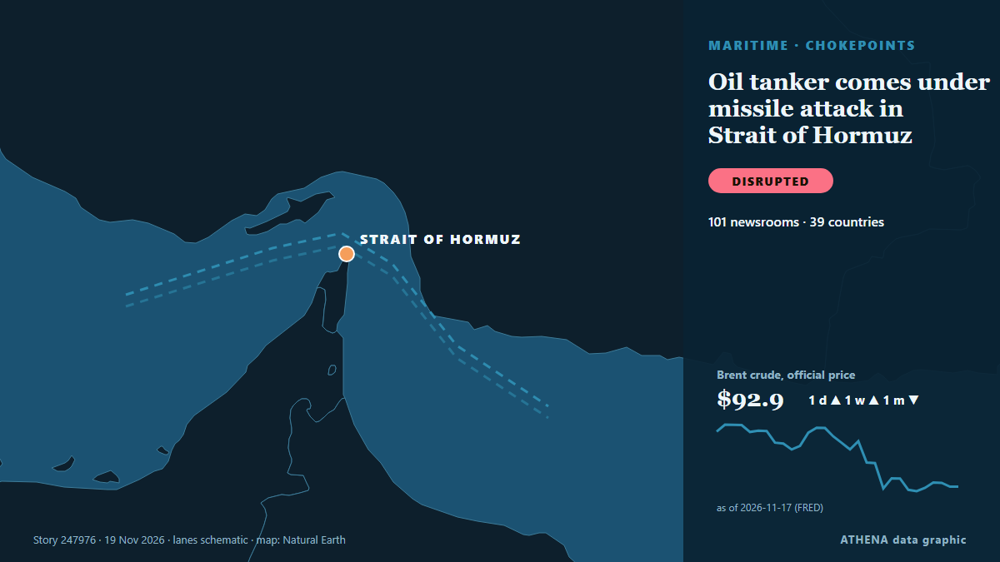

Oil tanker comes under missile attack in Strait of Hormuz

'Crew are accounted for and safe,' says UKMTO. from Anadolu Agency (English)
Reported independently by 102 outlets in 39 countries since 14 Nov, first by Guardian Business; coverage is fading. ATHENA rates the risk elevated (4.2/10), driven mainly by the severity of the harm described and its geographic and sector reach. Confidence is 88% (high), with 102 independent outlets corroborating it and an average source reliability of 75%. Outlets by country: Turkey (6), United States (5), Azerbaijan (3). Coverage: 14 Nov to 19 Nov, 114 hours.
Why it matters: The Strait of Hormuz links the Persian Gulf to the open ocean. Roughly a fifth of the oil consumed worldwide passes through it, so attacks on shipping or threats to close it move energy prices and insurance costs within hours.
What changed: 44 new reports from 27 outlets in the 24 hours to 19 Nov.
First reported as: Ecuadorian fishermen who survived US boat strikes sue Trump administration
AutomatedSelected, grouped and scored by ATHENA's published method from 31 independent outlets. The headline is the outlet's own; ATHENA's sentences follow fixed patterns - no generative AI writes them. How it works →
How to read this page
- What you are reading
- 102 outlets in 39 countries reported this event. The reports below are listed in the order they appeared; each headline opens the original article. ATHENA writes none of the reports.
- Our reading
- No reading yet — We are not giving a reading yet: the reports gathered here do not all describe the same event. We prefer to say nothing than to say it on thin evidence.
- How much evidence
- Limited Treat this page as an early report.
After repeats, off-topic items and stale reports are removed, 10 of the 37 listed reports are counted; 27% of the headlines match the event.
- What this does not mean
- ATHENA measures how an event is reported, not whether it is true. This is not a forecast, a judgement on who is right, or advice.
- What would change it
- Reports from other independent outlets showing a different development, or a firm confirmation or denial from an official source.
Reading R2 · refreshed with every update of this page. ATHENA has not yet published a track record for these readings; when it does, it will be linked here.
At a glance
Selected, scored and written by ATHENA's published methodology. No editor intervenes in individual events. How this is produced ›
| 14 Nov 11:00 UTC | 2 |
|---|---|
| 14 Nov 17:00 UTC | 0 |
| 14 Nov 23:00 UTC | 0 |
| 15 Nov 05:00 UTC | 0 |
| 15 Nov 11:00 UTC | 9 |
| 15 Nov 17:00 UTC | 2 |
| 15 Nov 23:00 UTC | 6 |
| 16 Nov 05:00 UTC | 10 |
| 16 Nov 11:00 UTC | 16 |
| 16 Nov 17:00 UTC | 12 |
| 16 Nov 23:00 UTC | 13 |
| 17 Nov 05:00 UTC | 32 |
| 17 Nov 11:00 UTC | 49 |
| 17 Nov 17:00 UTC | 27 |
| 17 Nov 23:00 UTC | 10 |
| 18 Nov 05:00 UTC | 27 |
| 18 Nov 11:00 UTC | 11 |
| 18 Nov 17:00 UTC | 8 |
| 18 Nov 23:00 UTC | 16 |
| 19 Nov 05:00 UTC | 11 |
| 19 Nov 11:00 UTC | 6 |
| 17 Nov 12:36 UTC | 4.3 |
|---|---|
| 17 Nov 19:38 UTC | 4.4 |
| 18 Nov 08:39 UTC | 5.3 |
| 18 Nov 08:58 UTC | 4.7 |
| 18 Nov 09:56 UTC | 5.3 |
| 18 Nov 10:53 UTC | 4.8 |
| 18 Nov 12:29 UTC | 5.0 |
| 18 Nov 14:31 UTC | 4.3 |
| 18 Nov 14:45 UTC | 4.9 |
| 18 Nov 15:06 UTC | 4.3 |
| 19 Nov 00:09 UTC | 4.8 |
| 19 Nov 00:40 UTC | 4.3 |
| 19 Nov 01:25 UTC | 5.1 |
| 19 Nov 02:30 UTC | 4.6 |
| 19 Nov 14:10 UTC | 4.2 |
Why these numbers
Importance
Risk
Confidence
The reporting — who reported it, and when
headline as published · opens the original- Guardian Business · United KingdomEcuadorian fishermen who survived US boat strikes sue Trump administration
- APA (English) · AzerbaijanShip carrying 13 Azerbaijani citizens attacked by drone in Black Sea-VIDEO
- Daily Trust · NigeriaDriver injured as tanker overturns, spills fuel in Jigawa community
- Anadolu Agency (English) · TurkeyTanker comes under attack in Gulf waters: UK maritime agency
- Punch · NigeriaPetrol tanker crashes in Jigawa, spills fuel
- BusinessWorld · PhilippinesAznar Shipping eyes two more vessels, bullish on December IPO
- Colombia One · ColombiaYacht Catches Fire Off Cartagena; 13 Tourists and Crew Rescued
- New Straits Times · MalaysiaHeritage building gutted in fire in Melaka
- gCaptain · United StatesAmerican Heritage Captain, Crew and Tug Operators Hailed as Heroes After Mississippi River Capsizing
- Stuff · New ZealandMultiple crews battle two-storey Bay of Plenty house fire, one injured
- SeaNews Türkiye · TurkeyQingdao Port and Singapore Forge Landmark Green and Digital Shipping Agreement
- Ports Europe · EURPiraeus tanker hits moored tug after refuelling cruise ship, captain arrested
- The Independent · United KingdomHeroic captain of New Orleans ship injured in collision stayed with passengers until they were safe
- The Maritime Executive · United StatesThe Hardest Part of Maritime Regulation Begins After the Rule Is Written
- Simple Flying · United StatesWhat A 2nd Captain Adds To The Cost Of American Airlines' 16-Hour JFK-Delhi Flight
- Cyprus Shipping News · CyprusScott Vicknair Personal Injury Lawyers Shares Maritime Safety Information Following Vessel Incident Near the Port of New Orleans
- Cyprus Shipping News · CyprusMaritime Passport and The Bahamas Maritime Authority progress collaboration on electronic seafarer documentation
- AzerNews · AzerbaijanVenezuela reportedly grants US-backed company 100-year control over 17 oil fields
- Arab News · Saudi ArabiaBritish Authority: Tanker targeted by unknown projectile in Strait of Hormuz, fire erupts
- Middle East Eye · INTVessel struck by 'unknown projectile' in Hormuz Strait
- SeaNews Türkiye · TurkeyNew Regulations for Fuel Reporting on Turkish-Flagged Vessels Announced
- Arab Times · KuwaitTanker Hit by Unknown Projectile in Strait of Hormuz, Engine Room Catches Fire
- Hürriyet Daily News · TurkeyMore than 21,000 ships pass through Istanbul Strait in January-September
- The Straits Times · SingaporeDrone strike behind sinking of cargo ship off Bulgaria's coast, maritime security sources say
- The Sofia Globe · BulgariaCargo ship sinks off Bulgaria’s coast after being hit by two drones
- Human Rights Watch · United StatesEcuadorian Courts Expose Flaws in US High-Seas Arrests
- Ports Europe · EURPiraeus Port Authority reports on investments in 2026
- Novinite · BulgariaAll 12 Crew Members Rescued After Cargo Ship Sinks in the Black Sea Near Bulgaria
- Portugal Resident · PortugalMaritime Police seize high-speed drug boat, crew flees
- Marine Insight · IndiaWind-Powered Cargo Ship Neoliner Origin Cuts Fuel Use By 70% In Its First Year
- NDTV · IndiaOil Tanker On Fire After Being Hit By "Unknown Projectile" In Hormuz Strait
- Marine Insight · IndiaInjured Captain Stayed On Bridge And Was Last To Leave As River Cruise Ship Capsized
- Daily Sabah · TurkeyTurkish, Azerbaijani crew rescued after Black Sea ship sinks
- ABC News (International) · United StatesCargo ship sinks off Bulgaria's Black Sea coast
- Hürriyet Daily News · TurkeyTurkish crew rescued as cargo ship sinks in Black Sea
- NEWS.am (English) · ArmeniaCargo ship with Azerbaijani, Turkish crew sinks in Black Sea
- APA (English) · AzerbaijanOil tanker comes under missile attack in Strait of Hormuz